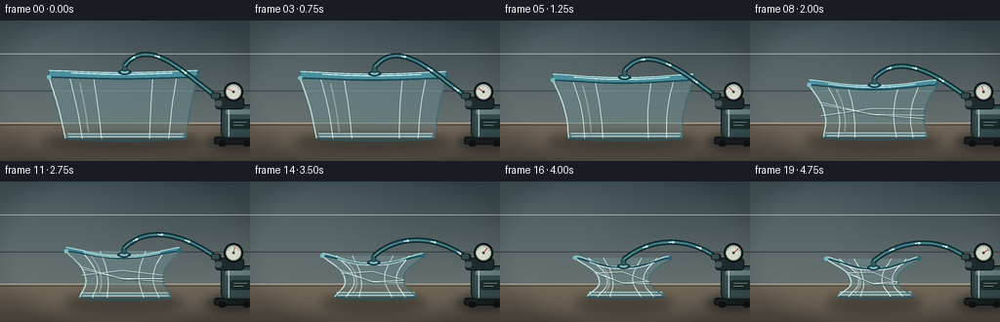
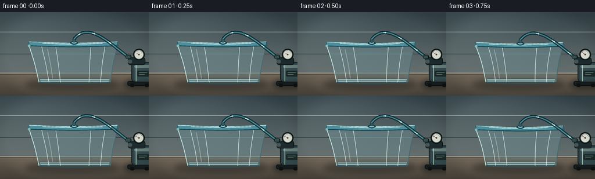

CODING AGENTS AS PIXEL WORLD MODELS
traex/GPT-5.6-Sol · mechanics_0027
点击播放 · 原生 RGB 像素
逐轮保存的候选
回放视频、检查图与代码变化。
每份候选均可单独播放。实际图片检查记录在下方工具轨迹中。
候选 01播放与检查图
点击播放 · 原生 RGB 像素


展开代码变化
--- 上一保存版本
+++ 本次保存版本
@@ -0,0 +1,263 @@
+from pathlib import Path
+import math
+import numpy as np
+from PIL import Image, ImageDraw, ImageFilter
+import artifact_io
+
+W, H, N = 256, 144, 20
+SS = 4
+CW, CH = W*SS, H*SS
+rng = np.random.default_rng(2701)
+
+def sc(v): return int(round(v*SS))
+def pts(seq): return [(sc(x),sc(y)) for x,y in seq]
+def bezier(p0,p1,p2,p3,n=60):
+ out=[]
+ for i in range(n):
+ t=i/(n-1); a=1-t
+ out.append((a**3*p0[0]+3*a*a*t*p1[0]+3*a*t*t*p2[0]+t**3*p3[0],
+ a**3*p0[1]+3*a*a*t*p1[1]+3*a*t*t*p2[1]+t**3*p3[1]))
+ return out
+
+def line(draw, xy, fill, width=1, joint='curve'):
+ draw.line(pts(xy), fill=fill, width=max(1,sc(width)), joint=joint)
+
+def poly(draw, xy, fill, outline=None, width=1):
+ draw.polygon(pts(xy), fill=fill)
+ if outline: draw.line(pts(list(xy)+[xy[0]]), fill=outline, width=sc(width), joint='curve')
+
+def rounded(draw, box, radius, fill, outline=None, width=1):
+ draw.rounded_rectangle(tuple(sc(x) for x in box), radius=sc(radius), fill=fill, outline=outline, width=sc(width))
+
+def ellipse(draw, box, fill, outline=None, width=1):
+ draw.ellipse(tuple(sc(x) for x in box), fill=fill, outline=outline, width=sc(width))
+
+def smooth(x): return x*x*(3-2*x)
+
+def sample_polyline(path, t):
+ z=t*(len(path)-1); i=min(len(path)-2,int(z)); f=z-i
+ return (path[i][0]*(1-f)+path[i+1][0]*f, path[i][1]*(1-f)+path[i+1][1]*f)
+
+def make_background():
+ # softly graded laboratory wall and worktop
+ y=np.arange(CH)[:,None]
+ top=np.array([51,66,72.],float); bot=np.array([102,112,112.],float)
+ f=np.clip(y/(105*SS),0,1)[...,None]
+ arr=np.empty((CH,CW,3),dtype=np.float32)
+ arr[:]=top+(bot-top)*f
+ # broad cool light from upper left
+ yy,xx=np.mgrid[0:CH,0:CW]
+ glow=np.exp(-(((xx-46*SS)/(115*SS))**2+((yy-22*SS)/(62*SS))**2))[:,:,None]
+ arr += glow*np.array([15,17,16])
+ # table
+ for Y in range(sc(105),CH):
+ t=(Y/SS-105)/39
+ arr[Y,:,:]=np.array([116,105,90])*(1-t)+np.array([76,70,62])*t
+ # very subtle fixed photographic grain
+ noise=rng.normal(0,0.75,(CH,CW,1))
+ arr=np.clip(arr+noise,0,255).astype(np.uint8)
+ im=Image.fromarray(arr,'RGB').convert('RGBA')
+ d=ImageDraw.Draw(im,'RGBA')
+ line(d,[(0,105),(256,105)],(206,205,190,72),0.8)
+ line(d,[(0,107),(256,107)],(29,37,39,60),0.5)
+ # quiet horizontal wall seams
+ line(d,[(0,34),(256,34)],(232,241,239,12),0.5)
+ line(d,[(0,72),(256,72)],(20,30,32,10),0.5)
+ # pool of light on tabletop
+ light=Image.new('RGBA',(CW,CH),(0,0,0,0)); ld=ImageDraw.Draw(light,'RGBA')
+ ellipse(ld,(10,105,226,142),(222,205,174,26))
+ light=light.filter(ImageFilter.GaussianBlur(sc(13)))
+ return Image.alpha_composite(im,light)
+
+BG=make_background()
+
+def draw_pump(im, q):
+ # pump sits behind the container and remains static while gauge responds
+ sh=Image.new('RGBA',(CW,CH),(0,0,0,0)); d=ImageDraw.Draw(sh,'RGBA')
+ ellipse(d,(211,116,274,133),(9,13,14,115))
+ sh=sh.filter(ImageFilter.GaussianBlur(sc(4))); im.alpha_composite(sh)
+ d=ImageDraw.Draw(im,'RGBA')
+ # feet and base
+ rounded(d,(219,119,258,127),3,(25,31,32,255),(10,14,16,210),1)
+ rounded(d,(224,123,231,129),2,(15,18,19,255))
+ rounded(d,(249,123,256,129),2,(15,18,19,255))
+ # motor cylinder with metallic bands
+ rounded(d,(226,86,263,121),7,(47,65,67,255),(17,26,28,255),1.2)
+ rounded(d,(230,89,263,118),6,(54,77,79,255))
+ rounded(d,(231,91,261,96),3,(104,128,126,110))
+ line(d,[(234,88),(234,119)],(199,220,214,45),1)
+ line(d,[(258,91),(258,118)],(9,20,22,120),2)
+ # small top manifold
+ rounded(d,(220,78,250,91),4,(30,43,46,255),(13,20,21,255),1)
+ rounded(d,(220,82,227,88),2,(68,84,83,255))
+ # vacuum gauge
+ ellipse(d,(229,63,249,83),(28,35,36,255),(13,18,19,255),1.4)
+ ellipse(d,(231,65,247,81),(213,218,205,255),(104,119,115,255),0.7)
+ # gauge ticks
+ for a in np.linspace(math.radians(205),math.radians(335),7):
+ x1,y1=239+6.0*math.cos(a),73+6.0*math.sin(a)
+ x2,y2=239+7.0*math.cos(a),73+7.0*math.sin(a)
+ line(d,[(x1,y1),(x2,y2)],(46,57,57,220),0.55)
+ a=math.radians(210+115*q)
+ line(d,[(239,73),(239+6.2*math.cos(a),73+6.2*math.sin(a))],(181,48,38,255),0.8)
+ ellipse(d,(237.8,71.8,240.2,74.2),(65,65,59,255))
+ # connector and subtle label bars
+ rounded(d,(216,74,226,80),2,(30,37,38,255),(10,14,15,230),0.8)
+ rounded(d,(236,101,257,111),2,(28,43,44,130))
+ line(d,[(239,104),(253,104)],(182,204,197,80),0.55)
+ line(d,[(239,107),(249,107)],(182,204,197,55),0.55)
+
+def draw_shadow(im,q):
+ lay=Image.new('RGBA',(CW,CH),(0,0,0,0)); d=ImageDraw.Draw(lay,'RGBA')
+ ellipse(d,(43+35*q,113,207-30*q,136),(8,12,13,int(105-18*q)))
+ lay=lay.filter(ImageFilter.GaussianBlur(sc(5.2)))
+ im.alpha_composite(lay)
+
+def draw_container(im,q):
+ d=ImageDraw.Draw(im,'RGBA')
+ L=50+28*q; R=202-29*q; TY=58+21*q
+ BL=67+23*q; BR=190-23*q; BY=121-3*q
+ # Boundary walls bow inward under pressure.
+ left=[]; right=[]
+ for i in range(25):
+ u=i/24
+ inward=(1.2+19*q)*math.sin(math.pi*u)**1.25
+ wrinkle=1.4*q*math.sin(3*math.pi*u)*(math.sin(math.pi*u)**2)
+ lx=L*(1-u)+BL*u + inward + wrinkle
+ rx=R*(1-u)+BR*u - inward - 0.7*wrinkle
+ y=TY*(1-u)+BY*u + 1.2*q*math.sin(math.pi*u)
+ left.append((lx,y)); right.append((rx,y))
+ body=left+right[::-1]
+ # translucent colored interior, clipped to body mask
+ mask=Image.new('L',(CW,CH),0); md=ImageDraw.Draw(mask)
+ md.polygon(pts(body),fill=255)
+ yy=np.arange(CH)[:,None]
+ bod=np.zeros((CH,CW,4),dtype=np.uint8)
+ # blue-gray transparent plastic tint, darker near base
+ alpha=np.asarray(mask)
+ vertical=np.clip((yy/SS-TY)/max(1,BY-TY),0,1)
+ bod[:,:,0]=(127-25*vertical).astype(np.uint8)
+ bod[:,:,1]=(174-26*vertical).astype(np.uint8)
+ bod[:,:,2]=(180-23*vertical).astype(np.uint8)
+ bod[:,:,3]=(alpha*0.28).astype(np.uint8)
+ im.alpha_composite(Image.fromarray(bod,'RGBA'))
+ d=ImageDraw.Draw(im,'RGBA')
+ # far interior bottom line and blank, clearly empty
+ backbase=[(BL+2,BY-5),(BR-2,BY-5),(BR,BY-1),(BL,BY-1)]
+ poly(d,backbase,(91,127,132,42))
+ line(d,[(BL+2,BY-5),(BR-2,BY-5)],(213,235,230,70),0.8)
+ # side outlines
+ line(d,left,(191,224,222,185),1.25)
+ line(d,right,(66,106,113,190),1.35)
+ # base foot / thick molded edge
+ base_curve=bezier((BL,BY),(BL+22,BY+2.6),(BR-23,BY+2.6),(BR,BY),40)
+ line(d,base_curve,(44,82,89,210),2.1)
+ line(d,[(BL+3,BY-2),(BR-3,BY-2)],(216,237,230,92),0.75)
+ # plastic vertical ribs that bend inward with the wall
+ for frac,alpha_v in [(0.14,78),(0.30,54),(0.70,45),(0.86,82)]:
+ path=[]
+ for i in range(18):
+ u=i/17
+ lp=left[min(24,round(u*24))]; rp=right[min(24,round(u*24))]
+ # ribs slightly meander during crumpling
+ x=lp[0]*(1-frac)+rp[0]*frac + q*math.sin(math.pi*u)*math.sin(frac*16)*1.5
+ y=lp[1]*(1-frac)+rp[1]*frac
+ path.append((x,y))
+ line(d,path,(227,245,240,alpha_v),0.75)
+ # pressure folds: diagonal creases become prominent late
+ a=int(145*q*q)
+ if a>5:
+ for f,sgn in [(0.23,1),(0.47,-1),(0.71,1)]:
+ p1=sample_polyline(left,0.30+0.10*f); p2=sample_polyline(right,0.66-0.12*f)
+ if sgn<0: p1,p2=(p1[0],p1[1]+20*(1-q)),(p2[0],p2[1]-13*(1-q))
+ mid=((p1[0]+p2[0])/2,(p1[1]+p2[1])/2+sgn*(3+3*q))
+ line(d,[p1,mid,p2],(229,245,239,a),0.65)
+ line(d,[(p1[0]+1,p1[1]+1),(mid[0]+1,mid[1]+1),(p2[0]+1,p2[1]+1)],(24,63,70,a//2),0.55)
+ # broad glossy reflections along walls
+ hi=Image.new('RGBA',(CW,CH),(0,0,0,0)); hd=ImageDraw.Draw(hi,'RGBA')
+ reflection=[]
+ for u in np.linspace(.08,.90,35):
+ lp=sample_polyline(left,u); rp=sample_polyline(right,u)
+ x=lp[0]*.80+rp[0]*.20
+ reflection.append((x,lp[1]))
+ line(hd,reflection,(244,255,250,82),2.3)
+ hi=hi.filter(ImageFilter.GaussianBlur(sc(.55))); im.alpha_composite(hi)
+ d=ImageDraw.Draw(im,'RGBA')
+ # sealed lid: flexible membrane sags sharply at center
+ uc=[]; lc=[]
+ n=48
+ for i in range(n):
+ u=i/(n-1)
+ x=L*(1-u)+R*u
+ sag=math.sin(math.pi*u)**1.35
+ upper_y=(51+26*q)+(2.2+10.5*q)*sag + 1.0*q*math.sin(3*math.pi*u)*sag
+ lower_y=(58+21*q)+(1.7+9.0*q)*sag
+ uc.append((x,upper_y)); lc.append((x,lower_y))
+ lid=uc+lc[::-1]
+ poly(d,lid,(76,143,157,195),(37,87,99,235),1)
+ # top and bottom sealing beads
+ line(d,uc,(205,240,238,205),1.1)
+ line(d,lc,(25,75,88,225),1.8)
+ # lid shine follows indentation
+ shine=[]
+ for i in range(7,n-8):
+ u=i/(n-1); shine.append((uc[i][0],uc[i][1]+1.8))
+ line(d,shine,(224,251,246,100),0.9)
+ # center port mounted on flexible lid
+ center=uc[n//2]
+ px,py=center[0],center[1]-0.7
+ ellipse(d,(px-6.8,py-2.5,px+6.8,py+3.0),(30,79,91,235),(16,49,58,250),1)
+ ellipse(d,(px-3.8,py-1.5,px+3.8,py+1.5),(135,192,194,210))
+ rounded(d,(px-2.7,py-7.5,px+2.7,py-0.5),1.4,(48,91,98,255),(19,50,58,245),0.7)
+ # seam highlights at the corners make the seal legible
+ ellipse(d,(L-2.2,lc[0][1]-2.2,L+2.2,lc[0][1]+2.2),(123,187,192,155))
+ ellipse(d,(R-2.2,lc[-1][1]-2.2,R+2.2,lc[-1][1]+2.2),(44,101,112,190))
+ return (px,py-6.5)
+
+def draw_hose(im, start, q, frame):
+ # Hose runs from the airtight port to the pump; moving glints imply outward airflow.
+ end=(220,77)
+ path=bezier(start,(start[0]+25,start[1]-31+10*q),(190,55),(220,77),100)
+ d=ImageDraw.Draw(im,'RGBA')
+ line(d,path,(7,29,35,225),5.2)
+ line(d,path,(38,89,99,255),3.2)
+ line(d,path,(113,171,174,135),0.8)
+ # moving air packets travel toward pump
+ phase=(frame*0.095)%1
+ for k in range(3):
+ a=(phase+k/3)%1
+ a=.08+.84*a
+ b=min(.96,a+.055)
+ seg=[sample_polyline(path,t) for t in np.linspace(a,b,7)]
+ line(d,seg,(213,246,239,190),1.15)
+ # tiny forward arrowhead
+ p=sample_polyline(path,b); pp=sample_polyline(path,max(0,b-.02))
+ ang=math.atan2(p[1]-pp[1],p[0]-pp[0])
+ ah=[(p[0]-2.2*math.cos(ang-.55),p[1]-2.2*math.sin(ang-.55)),p,
+ (p[0]-2.2*math.cos(ang+.55),p[1]-2.2*math.sin(ang+.55))]
+ line(d,ah,(213,246,239,155),0.7)
+ # coupler in front of the hose
+ rounded(d,(216,73.8,225,80.2),2,(53,76,79,255),(12,22,24,255),0.8)
+
+frames=[]
+for fi in range(N):
+ t=fi/(N-1)
+ # accelerated timelapse deformation: a short calm lead-in, then rapid collapse
+ q=smooth(np.clip((t-0.045)/0.91,0,1))
+ im=BG.copy()
+ draw_pump(im,q)
+ draw_shadow(im,q)
+ start=draw_container(im,q)
+ draw_hose(im,start,q,fi)
+ # final optical polish: a restrained vignette
+ arr=np.asarray(im.convert('RGB')).astype(np.float32)
+ yy,xx=np.mgrid[0:CH,0:CW]
+ rr=((xx-CW*.49)/(CW*.73))**2+((yy-CH*.48)/(CH*.78))**2
+ vig=np.clip((rr-.38)*4.2,0,1)[...,None]
+ arr=arr*(1-.105*vig)
+ out=Image.fromarray(np.clip(arr,0,255).astype(np.uint8),'RGB').resize((W,H),Image.Resampling.LANCZOS)
+ frames.append(np.asarray(out,dtype=np.uint8))
+frames=np.stack(frames)
+assert frames.shape==(20,144,256,3) and frames.dtype==np.uint8
+artifact_io.save(frames,Path(__file__).resolve().parent)
+print('saved',frames.shape,frames.dtype)
可观测工具轨迹
实际执行的命令与返回图片。
命令 1exit 0
/bin/bash -lc "cat prompt.txt && printf '\\n---RULES---\\n' && cat GENERATION_RULES.md && printf '\\n---SPEC---\\n' && cat task_spec.json"
命令 2exit 1
/bin/bash -lc "find . -maxdepth 2 -type f -printf '%p %s bytes\\n' | sort && printf '\\nTools:\\n' && command -v ffmpeg && command -v python3 && python3 - <<'PY' import importlib.util for x in ['cv2','PIL','numpy','imageio','cairo','skimage']: print(x, bool(importlib.util.find_spec(x))) PY"
命令 3exit 0
/bin/bash -lc 'cat artifact_io.py'
命令 4exit 0
/bin/bash -lc 'for t in ffmpeg python3; do printf "$t: "; command -v "$t" || true; done python3 - <<'"'PY' import importlib.util for x in ['cv2','PIL','numpy','imageio','cairo','skimage']: print(x, bool(importlib.util.find_spec(x))) PY"
命令 5exit 0
/bin/bash -lc "cat > generate.py <<'PY'
from pathlib import Path
import math
import numpy as np
from PIL import Image, ImageDraw, ImageFilter
import artifact_io
W, H, N = 256, 144, 20
SS = 4
CW, CH = W*SS, H*SS
rng = np.random.default_rng(2701)
def sc(v): return int(round(v*SS))
def pts(seq): return [(sc(x),sc(y)) for x,y in seq]
def bezier(p0,p1,p2,p3,n=60):
out=[]
for i in range(n):
t=i/(n-1); a=1-t
out.append((a**3*p0[0]+3*a*a*t*p1[0]+3*a*t*t*p2[0]+t**3*p3[0],
a**3*p0[1]+3*a*a*t*p1[1]+3*a*t*t*p2[1]+t**3*p3[1]))
return out
def line(draw, xy, fill, width=1, joint='curve'):
draw.line(pts(xy), fill=fill, width=max(1,sc(width)), joint=joint)
def poly(draw, xy, fill, outline=None, width=1):
draw.polygon(pts(xy), fill=fill)
if outline: draw.line(pts(list(xy)+[xy[0]]), fill=outline, width=sc(width), joint='curve')
def rounded(draw, box, radius, fill, outline=None, width=1):
draw.rounded_rectangle(tuple(sc(x) for x in box), radius=sc(radius), fill=fill, outline=outline, width=sc(width))
def ellipse(draw, box, fill, outline=None, width=1):
draw.ellipse(tuple(sc(x) for x in box), fill=fill, outline=outline, width=sc(width))
def smooth(x): return x*x*(3-2*x)
def sample_polyline(path, t):
z=t*(len(path)-1); i=min(len(path)-2,int(z)); f=z-i
return (path[i][0]*(1-f)+path[i+1][0]*f, path[i][1]*(1-f)+path[i+1][1]*f)
def make_background():
# softly graded laboratory wall and worktop
y=np.arange(CH)[:,None]
top=np.array([51,66,72.],float); bot=np.array([102,112,112.],float)
f=np.clip(y/(105*SS),0,1)[...,None]
arr=np.empty((CH,CW,3),dtype=np.float32)
arr[:]=top+(bot-top)*f
# broad cool light from upper left
yy,xx=np.mgrid[0:CH,0:CW]
glow=np.exp(-(((xx-46*SS)/(115*SS))**2+((yy-22*SS)/(62*SS))**2))[:,:,None]
arr += glow*np.array([15,17,16])
# table
for Y in range(sc(105),CH):
t=(Y/SS-105)/39
arr[Y,:,:]=np.array([116,105,90])*(1-t)+np.array([76,70,62])*t
# very subtle fixed photographic grain
noise=rng.normal(0,0.75,(CH,CW,1))
arr=np.clip(arr+noise,0,255).astype(np.uint8)
im=Image.fromarray(arr,'RGB').convert('RGBA')
d=ImageDraw.Draw(im,'RGBA')
line(d,[(0,105),(256,105)],(206,205,190,72),0.8)
line(d,[(0,107),(256,107)],(29,37,39,60),0.5)
# quiet horizontal wall seams
line(d,[(0,34),(256,34)],(232,241,239,12),0.5)
line(d,[(0,72),(256,72)],(20,30,32,10),0.5)
# pool of light on tabletop
light=Image.new('RGBA',(CW,CH),(0,0,0,0)); ld=ImageDraw.Draw(light,'RGBA')
ellipse(ld,(10,105,226,142),(222,205,174,26))
light=light.filter(ImageFilter.GaussianBlur(sc(13)))
return Image.alpha_composite(im,light)
BG=make_background()
def draw_pump(im, q):
# pump sits behind the container and remains static while gauge responds
sh=Image.new('RGBA',(CW,CH),(0,0,0,0)); d=ImageDraw.Draw(sh,'RGBA')
ellipse(d,(211,116,274,133),(9,13,14,115))
sh=sh.filter(ImageFilter.GaussianBlur(sc(4))); im.alpha_composite(sh)
d=ImageDraw.Draw(im,'RGBA')
# feet and base
rounded(d,(219,119,258,127),3,(25,31,32,255),(10,14,16,210),1)
rounded(d,(224,123,231,129),2,(15,18,19,255))
rounded(d,(249,123,256,129),2,(15,18,19,255))
# motor cylinder with metallic bands
rounded(d,(226,86,263,121),7,(47,65,67,255),(17,26,28,255),1.2)
rounded(d,(230,89,263,118),6,(54,77,79,255))
rounded(d,(231,91,261,96),3,(104,128,126,110))
line(d,[(234,88),(234,119)],(199,220,214,45),1)
line(d,[(258,91),(258,118)],(9,20,22,120),2)
# small top manifold
rounded(d,(220,78,250,91),4,(30,43,46,255),(13,20,21,255),1)
rounded(d,(220,82,227,88),2,(68,84,83,255))
# vacuum gauge
ellipse(d,(229,63,249,83),(28,35,36,255),(13,18,19,255),1.4)
ellipse(d,(231,65,247,81),(213,218,205,255),(104,119,115,255),0.7)
# gauge ticks
for a in np.linspace(math.radians(205),math.radians(335),7):
x1,y1=239+6.0*math.cos(a),73+6.0*math.sin(a)
x2,y2=239+7.0*math.cos(a),73+7.0*math.sin(a)
line(d,[(x1,y1),(x2,y2)],(46,57,57,220),0.55)
a=math.radians(210+115*q)
line(d,[(239,73),(239+6.2*math.cos(a),73+6.2*math.sin(a))],(181,48,38,255),0.8)
ellipse(d,(237.8,71.8,240.2,74.2),(65,65,59,255))
# connector and subtle label bars
rounded(d,(216,74,226,80),2,(30,37,38,255),(10,14,15,230),0.8)
rounded(d,(236,101,257,111),2,(28,43,44,130))
line(d,[(239,104),(253,104)],(182,204,197,80),0.55)
line(d,[(239,107),(249,107)],(182,204,197,55),0.55)
def draw_shadow(im,q):
lay=Image.new('RGBA',(CW,CH),(0,0,0,0)); d=ImageDraw.Draw(lay,'RGBA')
ellipse(d,(43+35*q,113,207-30*q,136),(8,12,13,int(105-18*q)))
lay=lay.filter(ImageFilter.GaussianBlur(sc(5.2)))
im.alpha_composite(lay)
def draw_container(im,q):
d=ImageDraw.Draw(im,'RGBA')
L=50+28*q; R=202-29*q; TY=58+21*q
BL=67+23*q; BR=190-23*q; BY=121-3*q
# Boundary walls bow inward under pressure.
left=[]; right=[]
for i in range(25):
u=i/24
inward=(1.2+19*q)*math.sin(math.pi*u)**1.25
wrinkle=1.4*q*math.sin(3*math.pi*u)*(math.sin(math.pi*u)**2)
lx=L*(1-u)+BL*u + inward + wrinkle
rx=R*(1-u)+BR*u - inward - 0.7*wrinkle
y=TY*(1-u)+BY*u + 1.2*q*math.sin(math.pi*u)
left.append((lx,y)); right.append((rx,y))
body=left+right[::-1]
# translucent colored interior, clipped to body mask
mask=Image.new('L',(CW,CH),0); md=ImageDraw.Draw(mask)
md.polygon(pts(body),fill=255)
yy=np.arange(CH)[:,None]
bod=np.zeros((CH,CW,4),dtype=np.uint8)
# blue-gray transparent plastic tint, darker near base
alpha=np.asarray(mask)
vertical=np.clip((yy/SS-TY)/max(1,BY-TY),0,1)
bod[:,:,0]=(127-25*vertical).astype(np.uint8)
bod[:,:,1]=(174-26*vertical).astype(np.uint8)
bod[:,:,2]=(180-23*vertical).astype(np.uint8)
bod[:,:,3]=(alpha*0.28).astype(np.uint8)
im.alpha_composite(Image.fromarray(bod,'RGBA'))
d=ImageDraw.Draw(im,'RGBA')
# far interior bottom line and blank, clearly empty
backbase=[(BL+2,BY-5),(BR-2,BY-5),(BR,BY-1),(BL,BY-1)]
poly(d,backbase,(91,127,132,42))
line(d,[(BL+2,BY-5),(BR-2,BY-5)],(213,235,230,70),0.8)
# side outlines
line(d,left,(191,224,222,185),1.25)
line(d,right,(66,106,113,190),1.35)
# base foot / thick molded edge
base_curve=bezier((BL,BY),(BL+22,BY+2.6),(BR-23,BY+2.6),(BR,BY),40)
line(d,base_curve,(44,82,89,210),2.1)
line(d,[(BL+3,BY-2),(BR-3,BY-2)],(216,237,230,92),0.75)
# plastic vertical ribs that bend inward with the wall
for frac,alpha_v in [(0.14,78),(0.30,54),(0.70,45),(0.86,82)]:
path=[]
for i in range(18):
u=i/17
lp=left[min(24,round(u*24))]; rp=right[min(24,round(u*24))]
# ribs slightly meander during crumpling
x=lp[0]*(1-frac)+rp[0]*frac + q*math.sin(math.pi*u)*math.sin(frac*16)*1.5
y=lp[1]*(1-frac)+rp[1]*frac
path.append((x,y))
line(d,path,(227,245,240,alpha_v),0.75)
# pressure folds: diagonal creases become prominent late
a=int(145*q*q)
if a>5:
for f,sgn in [(0.23,1),(0.47,-1),(0.71,1)]:
p1=sample_polyline(left,0.30+0.10*f); p2=sample_polyline(right,0.66-0.12*f)
if sgn<0: p1,p2=(p1[0],p1[1]+20*(1-q)),(p2[0],p2[1]-13*(1-q))
mid=((p1[0]+p2[0])/2,(p1[1]+p2[1])/2+sgn*(3+3*q))
line(d,[p1,mid,p2],(229,245,239,a),0.65)
line(d,[(p1[0]+1,p1[1]+1),(mid[0]+1,mid[1]+1),(p2[0]+1,p2[1]+1)],(24,63,70,a//2),0.55)
# broad glossy reflections along walls
hi=Image.new('RGBA',(CW,CH),(0,0,0,0)); hd=ImageDraw.Draw(hi,'RGBA')
reflection=[]
for u in np.linspace(.08,.90,35):
lp=sample_polyline(left,u); rp=sample_polyline(right,u)
x=lp[0]*.80+rp[0]*.20
reflection.append((x,lp[1]))
line(hd,reflection,(244,255,250,82),2.3)
hi=hi.filter(ImageFilter.GaussianBlur(sc(.55))); im.alpha_composite(hi)
d=ImageDraw.Draw(im,'RGBA')
# sealed lid: flexible membrane sags sharply at center
uc=[]; lc=[]
n=48
for i in range(n):
u=i/(n-1)
x=L*(1-u)+R*u
sag=math.sin(math.pi*u)**1.35
upper_y=(51+26*q)+(2.2+10.5*q)*sag + 1.0*q*math.sin(3*math.pi*u)*sag
lower_y=(58+21*q)+(1.7+9.0*q)*sag
uc.append((x,upper_y)); lc.append((x,lower_y))
lid=uc+lc[::-1]
poly(d,lid,(76,143,157,195),(37,87,99,235),1)
# top and bottom sealing beads
line(d,uc,(205,240,238,205),1.1)
line(d,lc,(25,75,88,225),1.8)
# lid shine follows indentation
shine=[]
for i in range(7,n-8):
u=i/(n-1); shine.append((uc[i][0],uc[i][1]+1.8))
line(d,shine,(224,251,246,100),0.9)
# center port mounted on flexible lid
center=uc[n//2]
px,py=center[0],center[1]-0.7
ellipse(d,(px-6.8,py-2.5,px+6.8,py+3.0),(30,79,91,235),(16,49,58,250),1)
ellipse(d,(px-3.8,py-1.5,px+3.8,py+1.5),(135,192,194,210))
rounded(d,(px-2.7,py-7.5,px+2.7,py-0.5),1.4,(48,91,98,255),(19,50,58,245),0.7)
# seam highlights at the corners make the seal legible
ellipse(d,(L-2.2,lc[0][1]-2.2,L+2.2,lc[0][1]+2.2),(123,187,192,155))
ellipse(d,(R-2.2,lc[-1][1]-2.2,R+2.2,lc[-1][1]+2.2),(44,101,112,190))
return (px,py-6.5)
def draw_hose(im, start, q, frame):
# Hose runs from the airtight port to the pump; moving glints imply outward airflow.
end=(220,77)
path=bezier(start,(start[0]+25,start[1]-31+10*q),(190,55),(220,77),100)
d=ImageDraw.Draw(im,'RGBA')
line(d,path,(7,29,35,225),5.2)
line(d,path,(38,89,99,255),3.2)
line(d,path,(113,171,174,135),0.8)
# moving air packets travel toward pump
phase=(frame*0.095)%1
for k in range(3):
a=(phase+k/3)%1
a=.08+.84*a
b=min(.96,a+.055)
seg=[sample_polyline(path,t) for t in np.linspace(a,b,7)]
line(d,seg,(213,246,239,190),1.15)
# tiny forward arrowhead
p=sample_polyline(path,b); pp=sample_polyline(path,max(0,b-.02))
ang=math.atan2(p[1]-pp[1],p[0]-pp[0])
ah=[(p[0]-2.2*math.cos(ang-.55),p[1]-2.2*math.sin(ang-.55)),p,
(p[0]-2.2*math.cos(ang+.55),p[1]-2.2*math.sin(ang+.55))]
line(d,ah,(213,246,239,155),0.7)
# coupler in front of the hose
rounded(d,(216,73.8,225,80.2),2,(53,76,79,255),(12,22,24,255),0.8)
frames=[]
for fi in range(N):
t=fi/(N-1)
# accelerated timelapse deformation: a short calm lead-in, then rapid collapse
q=smooth(np.clip((t-0.045)/0.91,0,1))
im=BG.copy()
draw_pump(im,q)
draw_shadow(im,q)
start=draw_container(im,q)
draw_hose(im,start,q,fi)
# final optical polish: a restrained vignette
arr=np.asarray(im.convert('RGB')).astype(np.float32)
yy,xx=np.mgrid[0:CH,0:CW]
rr=((xx-CW*.49)/(CW*.73))**2+((yy-CH*.48)/(CH*.78))**2
vig=np.clip((rr-.38)*4.2,0,1)[...,None]
arr=arr*(1-.105*vig)
out=Image.fromarray(np.clip(arr,0,255).astype(np.uint8),'RGB').resize((W,H),Image.Resampling.LANCZOS)
frames.append(np.asarray(out,dtype=np.uint8))
frames=np.stack(frames)
assert frames.shape==(20,144,256,3) and frames.dtype==np.uint8
artifact_io.save(frames,Path(__file__).resolve().parent)
print('saved',frames.shape,frames.dtype)
PY
python3 generate.py
ls -lh pixels.npz inspection.png transition_check.png index.html frames/00.png frames/19.png"命令 6exit 0
/bin/bash -lc "python3 - <<'PY'
import numpy as np, json
from PIL import Image
p=np.load('pixels.npz')['pixels']
assert p.shape==(144,256,20) and p.dtype==np.uint32
fs=np.stack([np.asarray(Image.open(f'frames/{i:02d}.png').convert('RGB')) for i in range(20)])
d=np.abs(fs[1:].astype(int)-fs[:-1].astype(int))
print('tensor',p.shape,p.dtype,'frames',fs.shape,fs.dtype)
print('RGB range',fs.min(),fs.max(),'mean',fs.mean(axis=(0,1,2)).round(2))
print('mean consecutive abs delta:',np.round(d.mean(axis=(1,2,3)),2).tolist())
print('changed pixel fraction:',np.round(np.any(d>2,axis=3).mean(axis=(1,2)),3).tolist())
print('first-last MAD',np.abs(fs[-1].astype(int)-fs[0].astype(int)).mean().round(2))
print('artifacts ok')
PY"保存候选 1 份；完成命令 6 次；可验证图片返回 0 张。原始 API 响应与完整日志保留在本地。